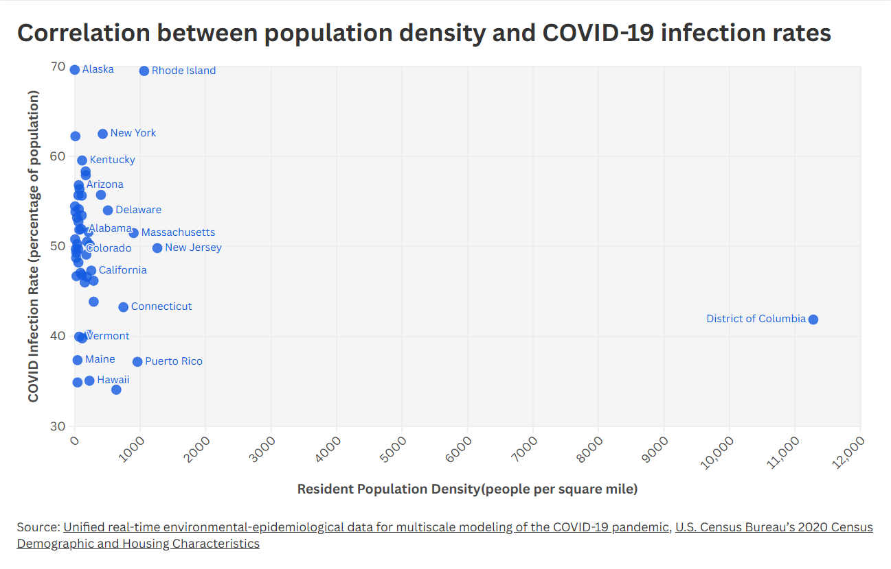
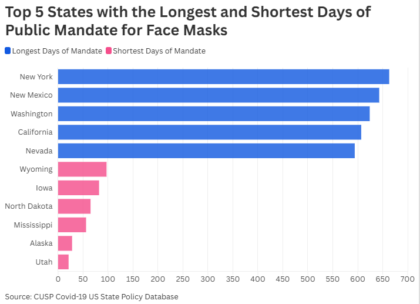
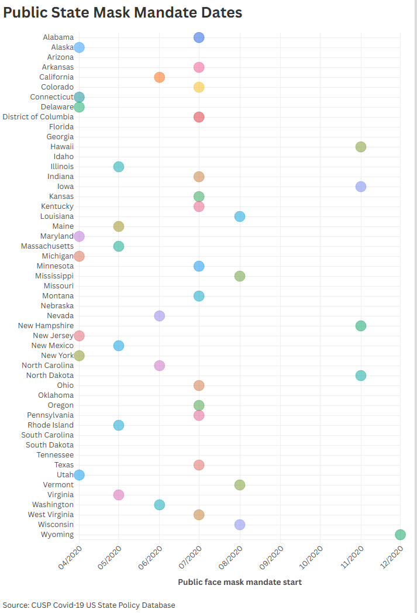
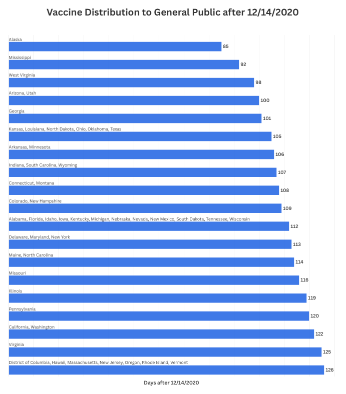
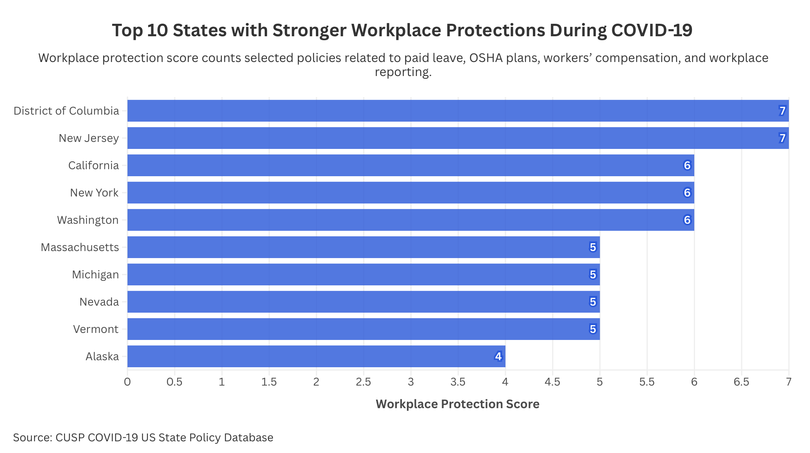

The COVID-19 pandemic exposed significant differences in how U.S. states responded to public health emergencies. While some states implemented strict workplace protections, mask mandates, and long-term safety regulations, others adopted fewer restrictions or had timed their regulations in a different way. Our analysis explores how many policy decisions may have influenced COVID-19 infection rates across states.
When we initially started exploring the COVID-19 pandemic and trying to understand which factors led some states to have higher COVID-19 infection rates than others, we thought there would be an obvious positive correlation between an area's population density and its COVID-19 infection rate. However, after collecting state-by-state pandemic data and population data for residents in the United States, the results showed no significant positive correlation between population density and the spread of COVID-19. For example, Alaska, a state with the lowest population density, had similar COVID infection rates to Rhode Island, a state with much higher population density. By uncovering this important information, we sought other factors that would have contributed to the spread of COVID-19.

The Visual below shows the states with the shortest and Longest Public Mask mandates, Even though Alaska had one of the earliest starts to the mandate they ended it very quickly only having it around 28 days and it having one of the highest covid percentage rates, as well as Wyoming having a late start to this mandate in December but still having a short time frame the mandate was enforced. On the other side New York started the mandate at the same time as Alaska but had one of the longest mandates at 663 days long.

Public mask mandates for each state were established in different months, with the earliest in April with Alaska and Connecticut, while the latest in December with Wyoming. Additionally, there are some states that didn't even have a public mask mandate, such as Arizona and Florida, but the duration of these mandates vary.

Every state varied in the speed of their COVID-19 vaccine distribution efforts after the national vaccine rollout began on December 14, 2020. States such as Alaska and Mississippi had the vaccine distributed to the general public much earlier, while others, including Oregon, Vermont, and Rhode Island, followed much later.

These differences indicate how states adopted different public health strategies and priorities during the pandemic. Similar to the workplace protection and mask mandate data shown throughout this pamphlet, the vaccine distribution timeline demonstrates that state responses to COVID-19 were not uniform across the country. The variation in vaccine distribution further supports the broader pattern that states approached pandemic management differently, with some implementing more aggressive or coordinated public health measures than others.

This visualization shows the top 10 states with the strongest workplace protection policies during COVID-19, based on the CUSP COVID-19 US State Policy Database. The workplace protection score counts selected policies related to paid leave, OSHA-approved state plans, workers’ compensation expansion, and workplace reporting requirements. A higher score means the state had more workplace-related protections recorded in the dataset. The District of Columbia and New Jersey had the highest score, followed by California, New York, and Washington. This shows that workplace protections were not equal across the country. Some states had stronger policy support for workers during the pandemic, while others had fewer protections.
The COVID-19 pandemic affected millions, but billions of individuals accross the world. In the United States, COVID-19 policies were implemented differently across states. This project shows that factors such as vaccine distribution, mask mandates, and public health policies have affected the spread of the coronavirus. By understanding the factors that play the most role in COVID-19 transmission, we can help governments accross the world be better prepared for pandemics such as hantavirus. This analysis can help with infection rates and help achieve greater public safety during pandemics.
The COVID-19 pandemic revealed significant differences in how states responded to public health emergencies, and those differences often influenced COVID-19 outcomes more than just population density alone. Across workplace protections, vaccine distribution timelines, and mask mandate policies, states implemented different levels of restrictions and public health measures throughout the pandemic. While factors such as geography, demographics, and vulnerable populations still affected infection rates, we’re finding that the overall data suggests that stronger and more coordinated public health responses were generally associated with lower COVID-19 spread. Rather than a single factor determining outcomes, the pandemic demonstrated how multiple policy decisions combined to shape how effectively states managed COVID-19.
Badr, H.S., Zaitchik, B.F., Kerr, G.H. et al. Unified real-time environmental-epidemiological data for multiscale modeling of the COVID-19 pandemic. Sci Data 10, 367 (2023). https://doi.org/10.1038/s41597-023-02276-y]
Esri. Population Density in the U.S. (2020 Census). ArcGIS Online. https://www.arcgis.com/home/item.html?id=a1926cb43e844c3f82275917d6eab47a
“CUSP: Data Library.” CUSP: Data Library. https://statepolicies.com/.